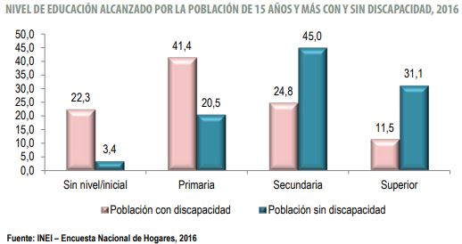
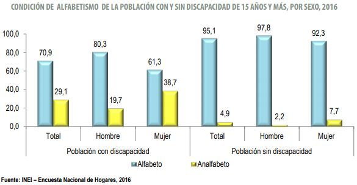
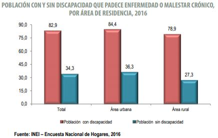
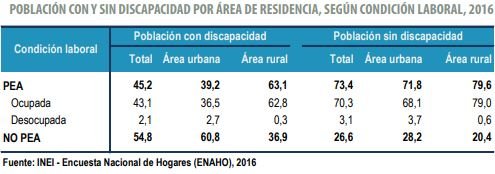
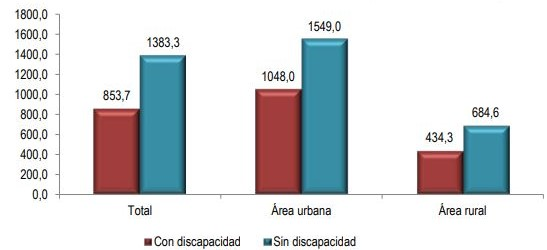

INTRODUCCIÓN
Según la Encuesta Nacional de Discapacidad,realizada por el INEI, el 2012, el 5,2% de la población presenta algún tipo de discapacidad, siendo la limitación más frecuente en la población de discapacitados las dificultades para moverse o usar las extremidades, que alcanza a ser el 59,2% del total. El 21,5% no puede usar sus extremidades superiores para comer o agarrar tijeras y el 19,1% no las puede usar para tomar objetos pequeños. Estudios estadísticos del INEI del 2014 muestran que el mismo porcentaje se mantuvo; sin embargo, para el año 2016, el porcentaje aumentó a 5,26%. Si bien es difícil cuantificar el impacto de la discapacidad, se puede observar en la gráfica que la población con discapacidad mayormente completa su educación primaria y solo el 11,5% logra completar su educación superior. Asimismo, se observa que la población con discapacidad presenta mayores tasas de analfabetismo comparado con la población sin discapacidad.
Tabla 1
Nivel de educación alcanzada por la población de 15 años y más con y sin discapacidad, 2016.

Nota. fuente INEI. la mayor cantidad de personas con discapacidad que lograron terminar algunos de los estudios son los de Primaria con 41.5% y la menor cantidad son los de superior con 11.5%.
Tabla 2 Condición de alfabetismo de la población con y sin discapacidad de 15 años y más, por sexo, 2016.  Nota. Fuente INEI. De la población con discapacidad el 38.7% son mujeres con condición de analfabetismo.
Por otro lado, la presencia de enfermedades crónicas en la población con discapacidad es más del doble que en la población sin discapacidad, lo cual significa que el costo implicado por parte del estado es mayor.

Asimismo, la población económicamente activa (PEA) con discapacidad es menor que la población sin discapacidad; es decir, estos deben recibir una subvención del estado. Además, las personas discapacitadas tienen un ingreso promedio mensual menor.


Hasta la actualidad, la industria protésica se ha enfocado en reemplazar la extremidad amputada para recuperar su función y para devolverle al paciente la sensación y apariencia de estar completo; sin embargo, no se ha atendido los efectos colaterales del uso de prótesis con el mismo énfasis.
DEFINICIÓN DE LA PROBLEMÁTICA
Como consecuencia del uso diario de un brazo prostético, ocurre la acumulación de sustancias de desecho en el socket, como pueden ser sudor, células muertas, polvo y suciedad que pueden provocar malos olores y la proliferación de bacterias y hongos. Esto podría conllevar a enfermedades como micosis, sarpullido por calor, ampollas, dermatitis de contacto, abrasiones y pelos encarnados dolorosos, afecciones evidenciadas en el transcurso del tiempo. (LaRaia Nicholas, 2010) (Díaz Lavana, Iván; 2010) (Protésica Colombia, 2015) La micosis es un tipo de infección común en usuarios de prótesis, producidas por distintos grupos de hongos patógenos para el hombre que invaden las estructuras queratinizadas, en los niveles superficial, subcutáneo y profundos o sistémicos de la piel (LaRaia Nicholas, 2010), ya que el contacto entre el muñón y el socket genera un ambiente oscuro, húmedo y cálido, apto para la proliferación de hongos.